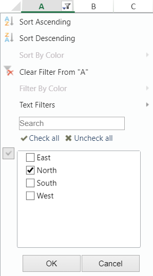
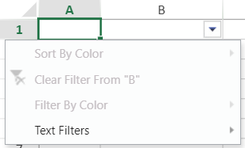
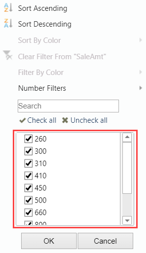
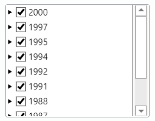
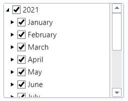
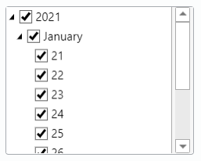
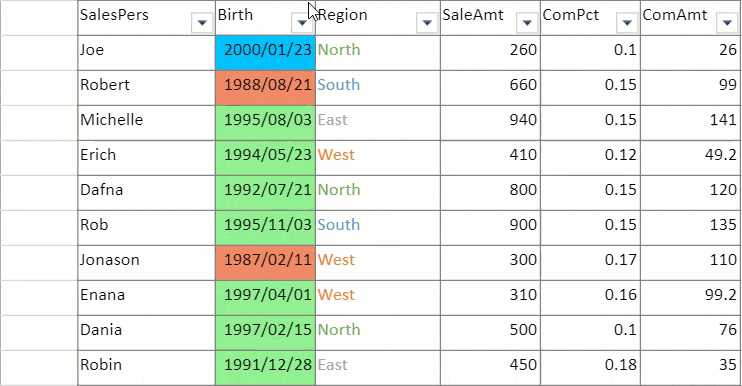

SpreadJS allows users to apply conditional filters (Number filters, Text filters, Date filters, Color filters, Custom Auto) based on the data type of the cells. After the filter operation is performed in a worksheet, the rows that match the filter condition will be displayed and the other rows will be hidden.
A filter button is displayed in the column header for a column that allows filtering. The user can click on the button and use the available options in the filter dialog.

The filter dialog helps you to filter by item, sort the list of items, hide filtered rows, as well as clear any applied filter condition on a column.
You can create a filter in code with the rowFilter HideRowFilter class. The following code examples shows how to add a filter dialog in a worksheet and apply filter to a range.
| JavaScript |
Copy Code
|
|---|---|
// Configure Workbook and Worksheet var spread = new GC.Spread.Sheets.Workbook("ss"); var activeSheet = spread.getActiveSheet(); activeSheet.setValue(0, 0, "North"); activeSheet.setValue(1, 0, "South"); activeSheet.setValue(2, 0, "East"); activeSheet.setValue(3, 0, "South"); activeSheet.setValue(4, 0, "North"); activeSheet.setValue(5, 0, "North"); activeSheet.setValue(6, 0, "West"); activeSheet.setColumnWidth(0, 80); // Set a row Filter activeSheet.rowFilter(new GC.Spread.Sheets.Filter.HideRowFilter(new GC.Spread.Sheets.Range(0, 0, 7, 1))); // Filter column 1 by "North" var rowFilter = spread.getActiveSheet().rowFilter(); var condition = new GC.Spread.Sheets.ConditionalFormatting.Condition( GC.Spread.Sheets.ConditionalFormatting.ConditionType.textCondition, { compareType: GC.Spread.Sheets.ConditionalFormatting.TextCompareType.equalsTo, expected: "North" }); rowFilter.addFilterItem(0, condition); rowFilter.filter(0); |
|
The users can use the mouse or various keyboard keys to interact with the filter dialog. The Esc key can be used to cancel the dialog. The Tab key can be used to move to different sections and the up and down arrow keys can be used to move in the list of items. The space bar can be used to change the checked status.
You can control the information shown in the filter dialog by using the filterDialogVisibleInfo method. This method helps to get or set the visible info for the row filter.

The following code sample shows how to hide "sort by value" and list filter area in a filter dialog.
| JavaScript |
Copy Code
|
|---|---|
// Configure Workbook and Worksheet var spread = new GC.Spread.Sheets.Workbook(document.getElementById("ss")); var sheet = spread.getActiveSheet(); // Set a row filter sheet.rowFilter(new GC.Spread.Sheets.Filter.HideRowFilter(new GC.Spread.Sheets.Range(1, 1, 10, 3))); // Hide filter options var filter = sheet.rowFilter(); filter.filterDialogVisibleInfo({ sortByValue: false, sortByColor: true, filterByColor: true, filterByValue: true, listFilterArea: false }) |
|
The filter dialog list box supports hierarchical tree display. It displays the data type items which occupy the maximum amount of cells, whether they be numeric, text, or date type. If the filter data contains different kinds of the value type, the filter items will follow a particular order: Date, Number, Text, Logical and Blank, just like in Excel.
If the filter range includes outline columns, the hierarchy will be the same in FilterDialog ListBox with outline column data and the filter items checkbox will support the tree status in the way: check, uncheck and indeterminate (the status of the children is not the same). For more information, please refer to Outline Columns.

In the date tree view, the different hierarchy has a different format policy as explained below:
The date type value filter is displayed according to the data set as detailed in the following scenarios:
| Scenario | Example |
|---|---|
| If all the values of the filter range lie in different years, none of the levels are expanded. |  |
| If all the values of the filter range lie in the same year, then the year level is expanded. |  |
| If all the values of the filter range lie in the same year and same month, then the year level and month level are expanded. |  |
You can also apply color filters in the filter columns based on two modes:
The color filter menu is enabled when the filtered range has more than one type of cell background colors or font colors.

Also, refer Filter Operations